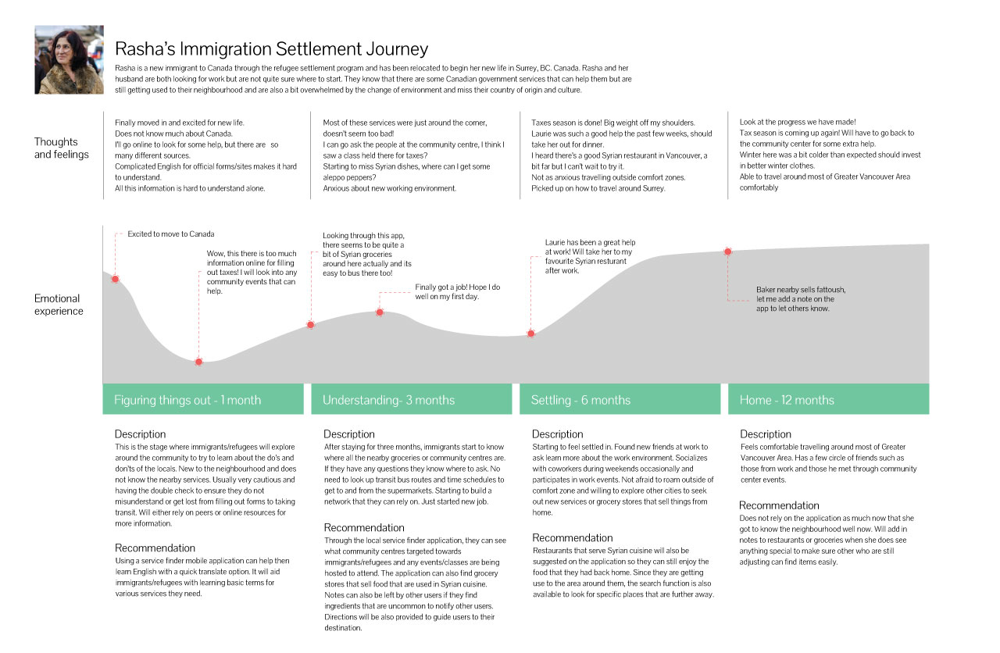
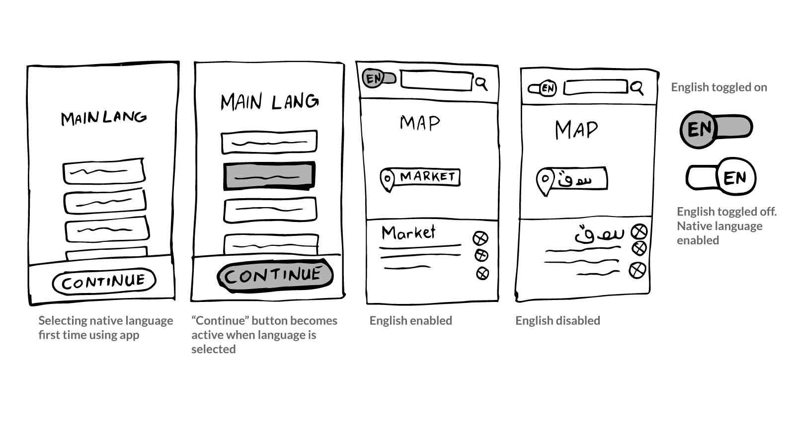
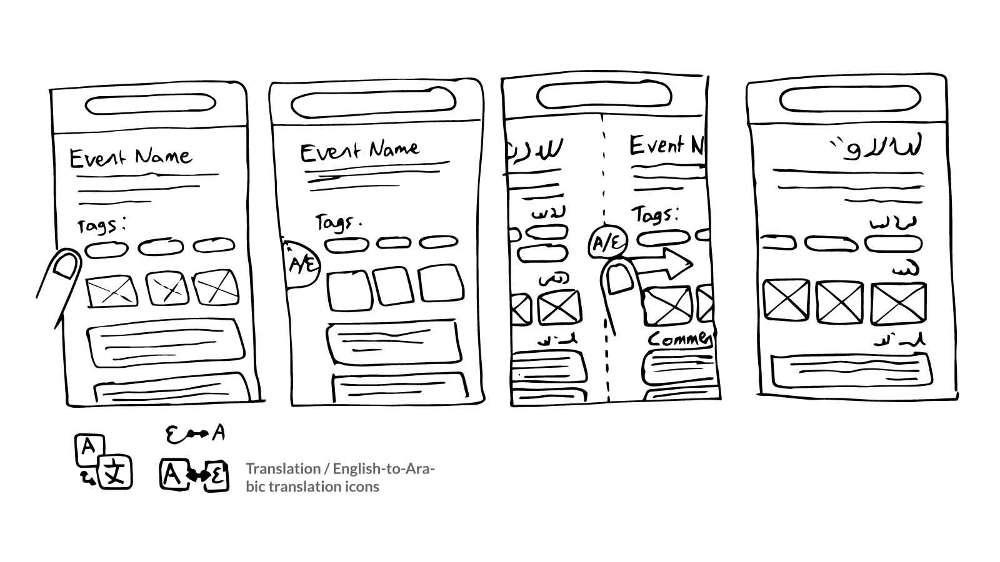
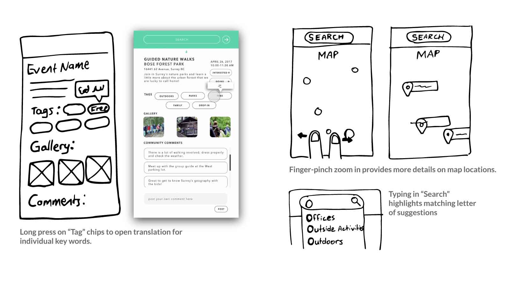

I conducted research and focused on designing and testing micro-interactions to increase information comprehension with regard to cultural differences like the right-to-left reading in Arabic.
Tools
- Adobe Illustrator
- Flinto
Context
In an academic course we were tasked with researching an area with design opportunity to create a digital web or app service as a solution.
Problem
In light of the Syrian refugee crisis in 2017, we looked at how to help these newcomers to Canada and other immigrants grow accustomed to their new surroundings by making it easier to overcome language barriers to increase engagement with their community through public events and services.
View larger

Final Project Interface
The final result is an interactive wireframe of a mobile application I designed with 3 other team members to help refugees and new immigrants to Canada with adjusting to their new home and engaging with the community to combat the isolation that can often plague immigrants to any new country. Dis⋅covered provides information about nearby free community events, immigration and international services offices, conveniently has the ability to swap back and forth between English and other languages to help overcome language barriers.
Process
Research
Initially, interest in this project was sparked from the news stories circulating at the time. Research began with developing a full understanding of the domain of settling in a new country. I conducted extensive research to understand the goals and problems of the end users and we captured our findings in a persona and journey map. We identified 2 key areas to help with a new immigrant or refugee's transition into living in Canada: handling the overwhelming number of legal work and becoming familiar with their community to be comfortable going out and making connections with others. As this was an academic project, we choose to design something to solve the latter issue as it seemed more likely to let us design something more visually interesting.
View larger
Journey map of our persona, Rasha
Language Barriers
View larger
Language translation ideation sketches
Making the app comfortable to use despite language barriers was a major area of focus for me. I ideated through sketches to design an onboarding process to select a user's native language and providing clear interface elements to quickly swap between languages to use the app while also learning useful English words.
View larger
Ideation sketches of a swipe to swap languages interaction
One of the more experimental ideas I came up with was to create a long press interaction on the edge of the screen to trigger the language toggle UI and then let users swipe to the left if changing to the English language or to the right if they are switching to Arabic to prime the user's brain for reading the languages in their opposite reading directions. However, this proved to be too difficult to implement with the prototyping software we were using so this idea was left behind.
View larger
Sketches of translation bubble feature and zooming in to reveal more map details
Throughout the whole design process I ideated and designed interactions like long pressing on event tags to provide translations in bubbles and managing the amount of information presented to users on the map view at different levels of zooming in.
Usability Testing
We designed initial iterations of the app interface with Adobe Illustrator but completed designing in the UX program Flinto so that we could capture the animated responses we had designed and conduct usability testing with an interactive prototype. I conducted informal speak aloud tests to gain qualitative feedback and find problem areas of the UI.
View larger

Translation features
View larger

User interactions to successfully search for directions
View larger

Showcasing the comments section on events
Reflection
Dis•Covered was a great opportunity for me to practice user-driven design through research and testing as well as experiment with unique, new designs but to also not become too attached to designs so that I can be more dynamic in my process and adapt to meet project requirements and real-world constraints.